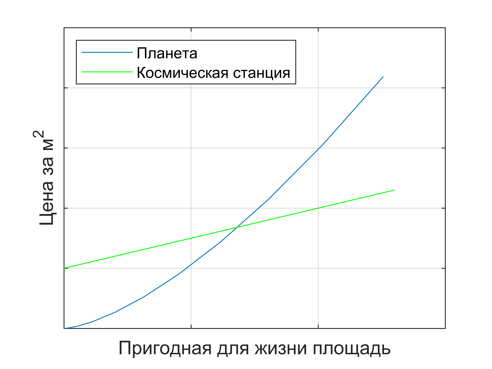

Вы попали в сегодняшний день из 1947 года. Вы идете по улице, любуетесь архитектурой, и через некоторое время натыкаетесь на бомжа. Здравый смысл не одержал победу над капитализмом. Печально. Вы уже намереваетесь продолжить прогулку, но тут случается что-то, повергающее вас в глубокое недоумение.
Бомж достает предмет, который в единственном экземпляре мог бы переломить исход войны, с которой вы едва вернулись. Артефакт божественной силы, открывающий своему владельцу мгновенный доступ ко всем знаниям человечества и позволяющий предсказывать будущее.
Смартфон.
Вы задумываетесь на некоторое время, после чего замечаете вслух:
– А ведь предсказать это было не так уж и сложно…
– Да ладно! – восклицает бомж.
– Чтобы это понять, вернемся обратно в 47-й год. Сравним дом и компьютер, которые здесь есть. Они оба большие и дорогие. Но есть принципиальная разница. Дом должен быть большим. Иначе обитающие в нем приматы, которые эволюционировали для жизни на бескрайних африканских равнинах, чувствуют себя некомфортно. Нельзя сказать того же о компьютере. Его размер – не функция, а побочный эффект. И никакие физические законы не препятствуют его уменьшению.
– Это позволяет предсказать, что компьютеры будут уменьшаться в размере, но не в цене. Как раз наоборот: логично, что чем меньше размеры вычислительных элементов, тем сложнее будет собирать из них схемы.
– Разумное возражение. Чтобы разобраться с ним, потребуется другой пример. Сравним теперь смартфон с… бананом. Чем пристальнее мы вглядываемся в банан, да и вообще в любой организм, тем более сложной и безумной оказывается его структура. В клетке независимыми функциональными элементами являются отдельные молекулы. Человеческим технологиям потребуются еще десятилетия, чтобы достичь такого уровня миниатюризации.
– Тем не менее, смартфон на несколько порядков дороже.
– И основная причина тому – неэффективность производства. Производство живых организмов полностью автоматизировано. Если мы добьемся того же в электронике, ее цена станет гораздо ближе к банановой.
– Но если все будет только дешеветь, то во что вкладываться?
– Отнюдь не все. Мы просто еще не дошли до обратных примеров. Один из них – недвижимость. Сами дома тоже подешевеют, но не земля, на которой они строятся. Ее стоимость тоже можно выразить через масштаб.
– Как, если она плоская?
– Поверхность плоская, но под каждым ее квадратным метром находится более 11 миллионов тонн всевозможных материалов. Так что не все вещи стоят дороже своего масштаба. Некоторые гораздо дешевле. Пока что. С другой стороны, растущая цена земли создаст экономический стимул к ее расширению.
– Что, пацаны, на Марс?
– Можно и на Марс. Но есть вариант оптимальнее. Марс имеет ту же проблему: это шар, а поверхность шара – самая дорогая площадь из возможных. Было бы гораздо эффективнее накопать там материалов и построить в открытом космосе множество цилиндрических станций. Более того, в них можно создать любые условия, какие нам захочется. Искусственная гравитация на внутренней поверхности цилиндра обеспечивается вращением. Его внутренний объем ограничен, и атмосферу внутри можно создать какую угодно. Тогда и Марс не нужно терраформировать. Начальные вложения в такой проект тоже будут астрономическими, но со временем он гарантированно окупится.

– Короче, не имея недвижимости сейчас, потом ее тем более не достанешь. Шикарные новости, – огорченно констатирует бомж.
– Вовсе не обязательно. У стоимости вещей есть еще одно, редко используемое слагаемое – их история. И повлиять на него невозможно по определению. Невозможно создать новую рукопись Шекспира, новое платье Мэрилин Монро или новый двигатель Аполлона-11. Поэтому когда-нибудь этот двигатель – едва узнаваемый ржавый кусок металла – будет стоить дороже, чем флот межпланетных кораблей.
– Когда-нибудь… Звучит не слишком обнадеживающе.
– Зависит от того, доживем ли мы до лекарства от старения.
– Какая разница, если воспользоваться им смогут только богатые?
– А вот в этом я не уверен. К чему эта технология будет ближе: к дому или к смартфону? Правильный ответ – второй. У нас уже достаточно информации, чтобы утверждать это с большой точностью. Сколь бы сложным ни было лекарство от старения, его предельный масштаб не должен превосходить масштаба нашего собственного тела, который хоть и больше, чем у смартфона, но меньше, чем у автомобиля. Я даже осмелюсь утверждать, что в течение жизни одного поколения с момента разработки лекарства от старения оно станет доступно всем, кому сейчас доступен автомобиль (даже автотаз).
– Но будет ли его создание хорошей идеей…
– А это уже совсем другая история.